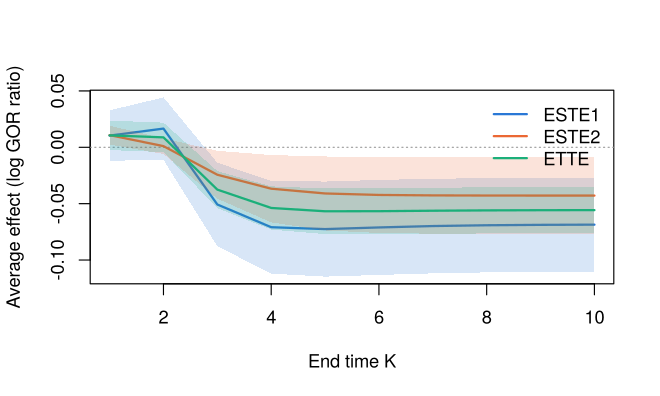

BiSCaL (Bivariate Separable Causal effects in Longitudinal studies) estimates and tests causal treatment effects on two ordinal or binary responses measured repeatedly over time. For example, HDL and LDL cholesterol recorded at every visit of a clinical trial. Responses may be missing intermittently and follow-up may be censored. The package implements the methods of Hu and Yi (2026, Statistics in Medicine).
The treatment A is conceptualized as two components: A_1 acting on the first response and A_2 on the second. Effects at the end of follow-up are defined through generalized odds ratios (GOR) of the two responses:
- the total treatment effect TTE_K compares (A_1, A_2) = (1, 1) with (0, 0);
- the separable treatment effects STE_{1,K} and STE_{2,K} change only the component acting on one response, and satisfy STE_{1,K} + STE_{2,K} = 2\,TTE_K.
The counterfactual arms (1, 0) and (0, 1) are identified by a recursive formula in the transition probabilities of the responses. BiSCaL estimates these probabilities by maximum likelihood and tests whether the treatment affects one response more than the other.
Features
- Maximum likelihood fitting of the transition and baseline models (baseline-category logistic regressions), with intermittent missingness and right-censoring handled through the observed-data likelihood.
- Binary and ordinal responses, with any thresholds of the generalized odds ratio.
- Total and separable treatment effects, their absolute values and difference, with delta-method standard errors and Wald tests, at given covariate values or averaged over a covariate distribution.
- Effects over the course of follow-up, with plots.
- Counterfactual joint distributions and generalized odds ratios under any combination of the treatment components.
- Simulators and true values for the simulation designs of the paper.
- Checked against the original research code of the paper: for the simulation design with complete data, the estimates, covariance matrices, effects and test statistics agree to numerical precision, and the effect computations agree with those of the data analysis.
Installation
Install the development version from GitHub:
# install.packages("remotes")
remotes::install_github("pingbohu43/BiSCaL", build_vignettes = TRUE)Example
simtrial is a simulated trial with two binary responses, recorded at a baseline visit and ten follow-up visits, with missingness and censoring. Fit the models, then estimate the effects for two covariate profiles:
library(BiSCaL)
fit <- biscal(cbind(y1, y2) ~ x1 + x2, data = simtrial, id = "id",
time = "visit", treatment = "trt")
summary(fit)$coefficients$beta1 # transition model for y1
#> Estimate Std. Error z value Pr(>|z|)
#> (Intercept) -0.5761739 0.10007335 -5.757516 8.536090e-09
#> y1[k-1]=1 1.5983598 0.09455848 16.903400 4.246953e-64
#> y2[k-1]=1 1.1998988 0.09775178 12.274956 1.234591e-34
#> trt 1.6198973 0.10568903 15.327014 5.046587e-53
#> x1 0.4016786 0.05597743 7.175724 7.192579e-13
#> x2 -0.5472111 0.09367553 -5.841559 5.171467e-09
aste(fit, newdata = data.frame(x1 = c(-1, 1), x2 = c(0, 1)))
#> Separable treatment effects given covariate values (individual level)
#> Thresholds: y1 <= 0, y2 <= 0; Wald 95% confidence intervals
#>
#> Profile 1 (x1 = -1, x2 = 0), end time K = 10:
#> Estimate Std. Error Lower 95% Upper 95%
#> STE1 -0.07897 0.02238 -0.1228 -0.03509
#> STE2 -0.03184 0.01304 -0.05739 -0.006276
#> TTE -0.05540 0.01037 -0.07572 -0.03508
#> ASTE1 0.07897 0.02238 0.03509 0.1228
#> ASTE2 0.03184 0.01304 0.006276 0.05739
#> DASTE 0.04713 0.03021 -0.01207 0.1063
#> H0: DASTE >= 0 vs H1: DASTE < 0: z = 1.560, p-value = 0.941
#>
#> Profile 2 (x1 = 1, x2 = 1), end time K = 10:
#> Estimate Std. Error Lower 95% Upper 95%
#> STE1 -0.06218 0.02425 -0.1097 -0.01466
#> STE2 -0.05422 0.02212 -0.09758 -0.01086
#> TTE -0.05820 0.01221 -0.08214 -0.03426
#> ASTE1 0.06218 0.02425 0.01466 0.1097
#> ASTE2 0.05422 0.02212 0.01086 0.09758
#> DASTE 0.007958 0.03947 -0.06940 0.08532
#> H0: DASTE >= 0 vs H1: DASTE < 0: z = 0.2016, p-value = 0.58Effects averaged over the covariates of the trial participants, and their evolution over follow-up:
easte(fit)$effects
#> K effect estimate std.error conf.low conf.high mc_se
#> 1 10 ESTE1 -0.06861868 0.02125479 -0.110277297 -0.026960058 0.0006870910
#> 2 10 ESTE2 -0.04283215 0.01738542 -0.076906951 -0.008757344 0.0002744586
#> 3 10 ETTE -0.05572541 0.01040316 -0.076115223 -0.035335601 0.0003760013
#> 4 10 EASTE1 0.06868117 0.02121616 0.027098257 0.110264077 0.0006808125
#> 5 10 EASTE2 0.04283215 0.01738542 0.008757344 0.076906951 0.0002744586
#> 6 10 DEASTE 0.02584902 0.03275520 -0.038349988 0.090048027 0.0007241223
plot(easte(fit, K = 1:10))
Main functions
| Function | Purpose |
|---|---|
biscal() |
Fit the transition and baseline models by maximum likelihood |
aste() |
Separable and total effects, and the test comparing them, given covariate values |
easte() |
The same averaged over a covariate distribution |
gor(), cf_prob()
|
Generalized odds ratios and counterfactual joint distributions |
simulate_biscal(), biscal_coefs(), biscal_truth()
|
Simulation designs of the paper and their true effects |
See vignette("BiSCaL") for a worked analysis and vignette("simulation") for the simulation studies of the paper reproduced with the package.
Citation
If you use BiSCaL, please cite the paper (see citation("BiSCaL")):
Hu, P. and Yi, G. Y. (2026). Inference about separable causal effects with longitudinal bivariate ordinal responses with missingness and censoring. Statistics in Medicine, 45, e70320. doi:10.1002/sim.70320